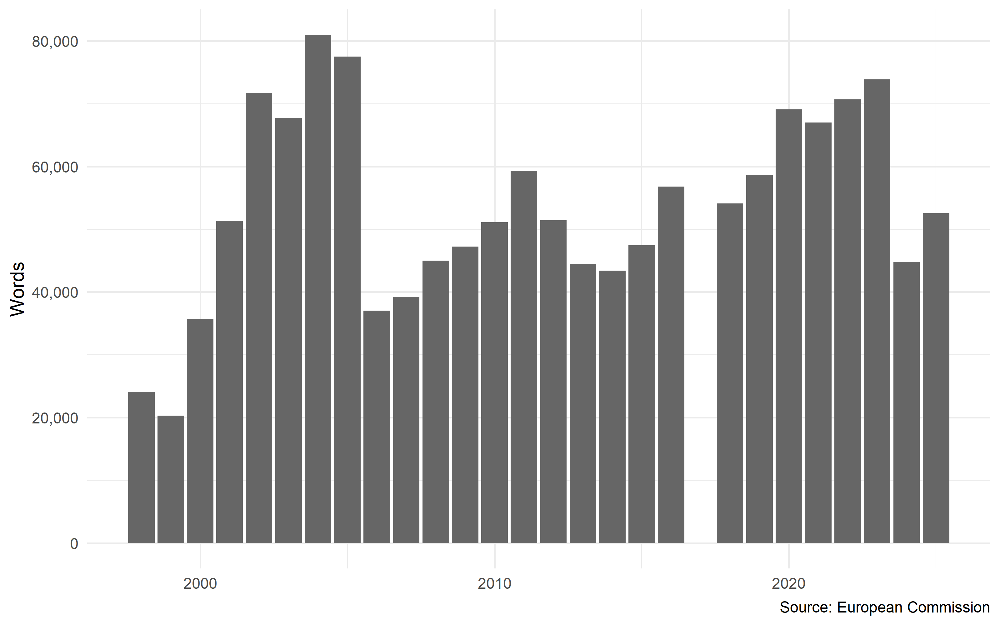
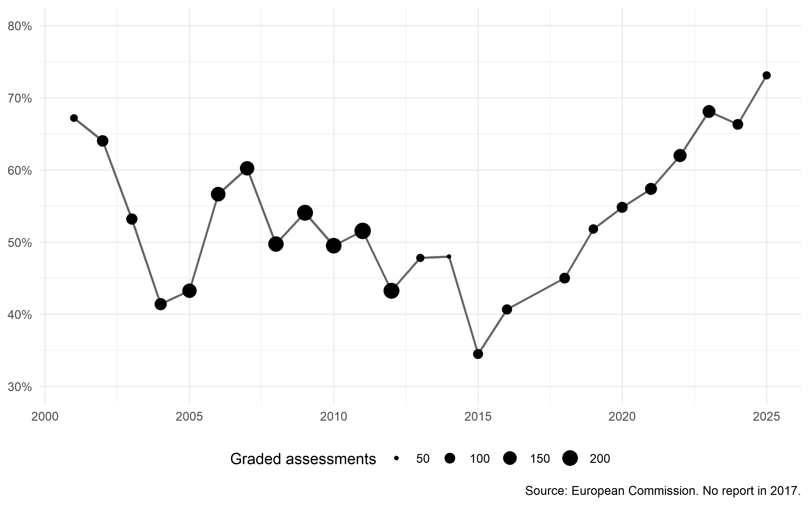
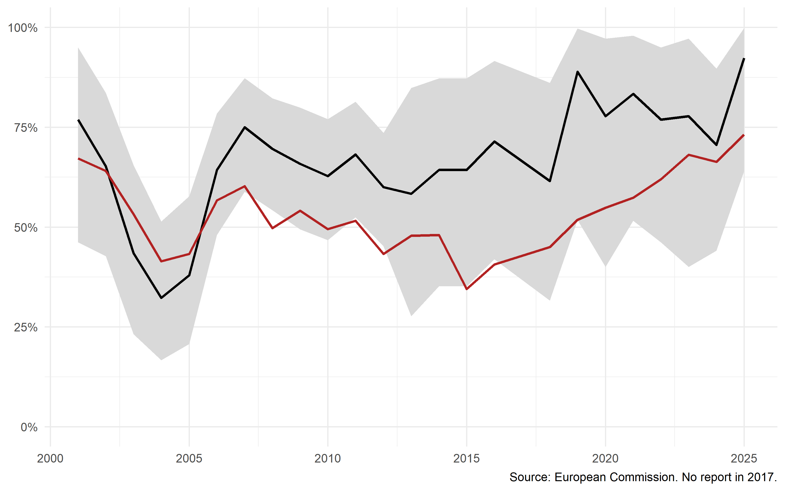
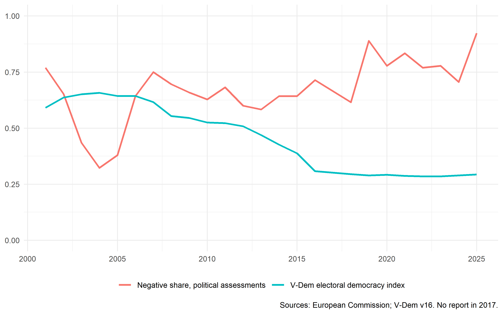

How the European Commission has assessed Türkiye, 1998-2025
Author
Ertuğ Alagöz
Published
October 1, 2026
Introduction
A companion analysis showed that Türkiye’s democratic reforms peaked in 2004, the year the European Council decided that accession negotiations would open, and declined from the moment those negotiations actually began. That is the pattern the external incentives model predicts, in which rule adoption responds to the size and credibility of the reward rather than to procedural milestones (Schimmelfennig and Sedelmeier 2004, 2020). That analysis measured outcomes. It said nothing about the instrument.
This note looks at the instrument. The European Commission has published an annual assessment of Türkiye every year since 1998, with one gap in 2017, and those reports are the written form conditionality takes. They are also, unusually for a diplomatic document, graded: the Commission describes change in each policy area as no progress, limited progress, some progress, further progress or good progress. That vocabulary is the Commission’s own, not a scale imposed by a researcher, which matters for the reason Grimmer and Stewart set out: automated content analysis is only as defensible as the measure it applies, and a measure the author did not build is harder to accuse of fitting the conclusion (Grimmer and Stewart 2013).
The question is whether the language tracked what was happening. Three findings follow. The Commission’s assessments were at their most lenient in 2004 and 2005, precisely when the membership prospect was most credible. The Commission has been consistently harsher on political criteria than on the technical chapters of the acquis, by ten to twenty percentage points, across the whole period. And a fourth claim, that the Commission softened its language in 2015 while negotiating the migration statement, does not survive restriction to the political sections, and is reported here as a result that failed rather than as a finding.
Data
The corpus is the full run of the Commission’s annual reports on Türkiye, from the first Regular Report of 1998 to the country report of 2025. Twenty-seven documents in all; no report was published in 2017, so the series has a genuine gap rather than a missing observation. The documents were collected from the archive maintained by the Turkish Directorate for EU Affairs, which holds every year in one place, with the 2023 report taken from the Commission’s own site.
The chunk above is not run when this document is rendered. The Commission and the Turkish archive both reorganise their sites periodically, and a document that silently re-downloads a corpus on every render is a document whose results can change without anyone noticing. The extracted text is kept in the repository instead, and the analysis below runs from it.
One line in that chunk does more work than it appears to. Text extracted from a PDF carries the page’s physical layout with it: line breaks fall inside sentences, and column alignment leaves runs of spaces between words. A phrase that reads as “no progress” on the page may be separated by a newline in the extracted string, and a pattern expecting a single space will miss most of its matches. str_squish collapses all internal whitespace before anything else happens.
Figure 1 shows the length of each report. The series is not a measure of anything substantive, but it is a reminder of what the corpus is: the Commission changed its reporting format in 2006, halving the length of the document, and changed it again under the revised enlargement methodology adopted in 2020, which reorganised the assessment around thematic clusters rather than the older division into political criteria, economic criteria and the acquis (European Commission 2020). Any measure built on raw counts will pick up those changes rather than anything about Türkiye.
Show code
corpus |>mutate(words =str_count(text, "[A-Za-z]+")) |>ggplot(aes(x = year, y = words)) +geom_col(fill ="grey40") +scale_y_continuous(labels = scales::comma) +labs(x =NULL, y ="Words", caption ="Source: European Commission")

Figure 1: Length of the Commission’s annual report on Türkiye, 1998-2025. No report was published in 2017.
Measure
The Commission grades progress in a standard form: a qualifier immediately followed by the word progress. Counting those qualifiers gives a measure of assessment that does not depend on a dictionary of the researcher’s own making, which is the main reason to prefer it over a sentiment score. The negative share used throughout is the count of no progress and limited progress divided by the count of all five qualifiers in a given year.
Show code
grade_rx <-"(no|limited|some|further|good) progress"pol_markers <-c("political criteria", "chapter 23:", "chapter 24:","democracy and the rule of law","human rights and the protection of minorities","rule of law and fundamental rights")oth_markers <-c("economic criteria", "ability to assume the obligations",paste0("chapter ", c(1:22, 25:33), ":"))classify_doc <-function(txt, yr) { tl <-tolower(txt) hp <-str_locate_all(tl, grade_rx)[[1]]if (nrow(hp) ==0) return(tibble(year =integer(), grade =character(), domain =character())) grab <-function(terms, lab) {tibble(pos =unlist(map(terms, function(m) str_locate_all(tl, fixed(m))[[1]][, 1])),type = lab) } mk <-bind_rows(grab(pol_markers, "political"), grab(oth_markers, "other")) |>filter(!is.na(pos)) |>arrange(pos) idx <-findInterval(hp[, 1], mk$pos)tibble(year = yr,grade =str_extract(substring(tl, hp[, 1], hp[, 2]), "^[a-z]+"),domain =if_else(idx ==0, NA_character_, mk$type[pmax(idx, 1)]))}hits <-map2(corpus$text, corpus$year, classify_doc) |>list_rbind()
Assigning each assessment to a policy domain is the part of this analysis that required the most judgement, and it is worth setting out what was tried and discarded. Slicing the documents at section headings fails, because the heading political criteria disappears after 2020 when the Commission moved to thematic clusters (European Commission 2020). Classifying each assessment by the words in a window around it also fails, because the Commission writes sentences such as there was no progress on the implementation of the action plan, where the policy domain is named in a heading several pages earlier.
What works is to locate every section marker in a document, label each as political or not, and assign each graded assessment to the nearest marker preceding it. Chapters of the acquis are numbered and punctuated consistently enough to serve as markers. Chapters 23 and 24, which cover the judiciary, fundamental rights, and justice and home affairs, are counted as political; the other thirty-one are not.
This is a researcher’s choice and the results are sensitive to it. An earlier version of the marker list included short terms such as energy and taxation, which occur throughout running prose rather than only as headings, and which therefore planted a spurious marker immediately before most assessments. That version put the political share of assessments at around fifteen per cent; the corrected version puts it higher and, more importantly, puts it in the right places.
The first two years are dropped from what follows. The graded formula appears four times in 1998 and thirteen times in 1999, which is too thin to support a proportion.
The language was most lenient when membership was most credible
Figure 2 plots the negative share across all policy domains. Two troughs stand out. The first is 2004 and 2005, at forty-three per cent, the lowest sustained values of the early period. These are the year the European Council decided that negotiations would open and the year they did.
Show code
all_share |>ggplot(aes(x = year, y = share)) +geom_line(linewidth =0.8, colour ="grey40") +geom_point(aes(size = mentions)) +scale_y_continuous(labels = scales::percent, limits =c(0.3, 0.8)) +scale_size_continuous(range =c(1, 5)) +labs(x =NULL, y =NULL, size ="Graded assessments",caption ="Source: European Commission. No report in 2017.") +theme(legend.position ="bottom")

Figure 2: Negative share of the Commission’s graded assessments, all policy domains. Point size shows the number of graded assessments in each year.
The trough is sharper when the measure is restricted to political criteria. Figure 3 shows thirty-two per cent in 2004 and thirty-eight per cent in 2005, the two lowest values in the twenty-four year series. The finding survives the restriction, and it survives it in the direction that matters: the leniency was not an artefact of the Commission being generous about customs procedures in those years.
The Commission is harsher on politics than on the acquis
The second feature of Figure 3 is the gap between the two lines. The political series sits above the all-domain series in every year of the period, typically by ten to twenty percentage points. The Commission has consistently judged Türkiye more severely on democracy, the judiciary and fundamental rights than on the technical body of EU law.
Show code
ggplot(pol_share, aes(x = year)) +geom_ribbon(aes(ymin = lo, ymax = hi), fill ="grey85") +geom_line(aes(y = share), linewidth =0.9) +geom_line(data = all_share, aes(y = share), colour ="firebrick", linewidth =0.9) +scale_y_continuous(labels = scales::percent, limits =c(0, 1)) +labs(x =NULL, y =NULL,caption ="Source: European Commission. No report in 2017.")

Figure 3: Negative share of graded assessments. Black: political criteria and chapters 23-24, with 95 per cent binomial intervals. Red: all policy domains.
The shaded band is a reminder of how thin the political series is after 2012. The Commission’s reports became shorter and less formulaic in those years, and the graded phrase appears nine to seventeen times annually rather than forty or more. The level of the series can be read; the year on year movements within it cannot.
A claim that did not survive
The all-domain series reaches its lowest point of the entire period in 2015, at thirty-five per cent. That year the European Union was negotiating the arrangement on migration that would be agreed in March 2016, and Chapter 17 was opened in December 2015 after a three year freeze. The obvious reading is that the Commission’s language softened while the Union needed Türkiye’s cooperation.
The restriction to political criteria removes that reading. In 2015 the political series stands at sixty-four per cent, identical to 2014 and in line with the years on either side. Whatever softening took place in 2015 took place in the technical chapters, not in the assessment of democracy and the rule of law. The migration interpretation is not supported and is not made here.
This is the result the domain restriction was built to test, and it came back against the hypothesis. It is reported because a robustness check that is only reported when it confirms is not a robustness check.
Language and measured democracy
Figure 4 sets the political series beside the Varieties of Democracy electoral democracy index, which aggregates expert codings through a measurement model that adjusts for coder reliability (Coppedge et al. 2011, 2026; Pemstein et al. 2026). The two series measure different things and are plotted together only to show their timing. The decline they are being compared against is the one documented in the Turkish case literature on competitive authoritarianism and de-Europeanisation (Esen and Gumuscu 2016; Saatçioğlu 2016; Aydın-Düzgit and Kaliber 2016), and it has the gradual, cumulative shape that characterises contemporary democratic erosion rather than a single rupture (Bermeo 2016).
Show code
vdem_tr <- vdem |>filter(country_text_id =="TUR", year >=2001) |>select(year, polyarchy = v2x_polyarchy)pol_share |>select(year, share) |>left_join(vdem_tr, by ="year") |>pivot_longer(c(share, polyarchy), names_to ="series", values_to ="value") |>mutate(series =recode(series,share ="Negative share, political assessments",polyarchy ="V-Dem electoral democracy index")) |>ggplot(aes(x = year, y = value, colour = series)) +geom_line(linewidth =1) +scale_y_continuous(limits =c(0, 1)) +labs(x =NULL, y =NULL, colour =NULL,caption ="Sources: European Commission; V-Dem v16. No report in 2017.") +theme(legend.position ="bottom")

Figure 4: Negative share of political assessments and the V-Dem electoral democracy index, 2001-2025. The two series measure different quantities and share an axis only because both are bounded by zero and one.
The relationship is loose rather than absent. The Commission’s political assessments hardened after 2018, by which time the measured decline had already run its course and flattened. Before that, through the decade in which the index fell from 0.66 to 0.39, the political series moved within a band of roughly sixty to seventy-five per cent without a clear trend. On the evidence here the Commission’s graded language did not track the decline as it happened; it hardened afterwards. With nine to seventeen observations a year in the later period, that statement is about levels and not about timing, and no lag can be estimated from a series this thin.
Limitations
The graded formula is not the only way the Commission expresses judgement, and it may not be the most informative one. Phrases such as serious backsliding, continued deterioration or remains a matter of concern carry assessment without using the word progress, and a measure built on them would have several times the number of observations. It would also be a dictionary of the author’s construction rather than the Commission’s own scale, and the trade between sample size and objectivity was resolved here in favour of objectivity. This is the validation problem that Grimmer and Stewart put at the centre of automated content analysis: a dictionary built for a particular corpus by the person testing a hypothesis on it needs external validation before its output means anything (Grimmer and Stewart 2013). A version using a wider evaluative vocabulary is the obvious next step and would be a genuine test of what is reported above.
The domain assignment rests on a marker list that was built by inspection and revised once after it produced obviously wrong results. The revision is documented above, but the fact that a first version had to be discarded is itself a warning: the results are a function of the list, and a different plausible list would give somewhat different numbers.
The reports are not a constant object. The Commission changed its reporting format in 2006 and again after 2020, and the structure of the document, the length of sections and the frequency of formulaic assessment language all change with it. The use of proportions rather than counts protects against the grossest version of this problem but not against subtler forms of it.
Finally, nothing here identifies a cause. The coincidence of the 2004 and 2005 troughs with the opening of negotiations is a coincidence of timing in a single case, and the analysis offers no way to distinguish an institution adjusting its language to a political moment from an institution describing a country that was, in those particular years, genuinely reforming.
Conclusion
The Commission’s graded assessments of Türkiye were at their most lenient in 2004 and 2005, and the leniency is sharpest in exactly the policy areas where conditionality bites hardest. Across the whole period the Commission has judged political criteria more severely than the acquis, by a consistent margin. Its political assessments hardened substantially after 2018, which is to say after the decline they describe had already happened.
The claim that the Commission softened its language around the 2015 migration negotiations is not supported once technical chapters are set aside, and is withdrawn.
Replication code is available at github.com/ertugalagoz/commission-language-turkiye. The extracted text of the reports is included in the repository; the reports themselves are public documents of the European Commission.
References
Aydın-Düzgit, Senem, and Alper Kaliber. 2016. “Encounters with Europe in an Era of Domestic and International Turmoil: Is Turkey a de-Europeanising Candidate Country?”South European Society and Politics 21 (1): 1–14.
Coppedge, Michael, John Gerring, Carl Henrik Knutsen, et al. 2026. V-DemCountry-Year Dataset v16. Varieties of Democracy (V-Dem) Project. https://doi.org/10.23696/vdemds26.
Coppedge, Michael, John Gerring, Staffan I. Lindberg, et al. 2011. “Conceptualizing and Measuring Democracy: A New Approach.”Perspectives on Politics 9 (2): 247–67.
Esen, Berk, and Sebnem Gumuscu. 2016. “Rising Competitive Authoritarianism in Turkey.”Third World Quarterly 37 (9): 1581–606.
European Commission. 2020. Enhancing the Accession Process: A Credible EU Perspective for the Western Balkans. COM(2020) 57 final, Brussels, 5 February 2020.
Grimmer, Justin, and Brandon M. Stewart. 2013. “Text as Data: The Promise and Pitfalls of Automatic Content Analysis Methods for Political Texts.”Political Analysis 21 (3): 267–97.
Pemstein, Daniel, Kyle L. Marquardt, Eitan Tzelgov, et al. 2026. The V-Dem Measurement Model: Latent Variable Analysis for Cross-National and Cross-Temporal Expert-Coded Data. V-Dem Working Paper No. 21. University of Gothenburg, Varieties of Democracy Institute.
Saatçioğlu, Beken. 2016. “De-Europeanisation in Turkey: The Case of the Rule of Law.”South European Society and Politics 21 (1): 133–46.
Schimmelfennig, Frank, and Ulrich Sedelmeier. 2004. “Governance by Conditionality: EU Rule Transfer to the Candidate Countries of Central and Eastern Europe.”Journal of European Public Policy 11 (4): 661–79.
Schimmelfennig, Frank, and Ulrich Sedelmeier. 2020. “The Europeanization of Eastern Europe: The External Incentives Model Revisited.”Journal of European Public Policy 27 (6): 814–33.